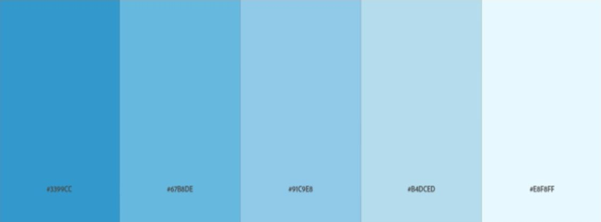
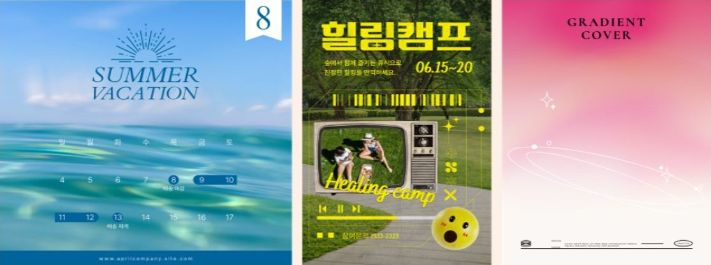
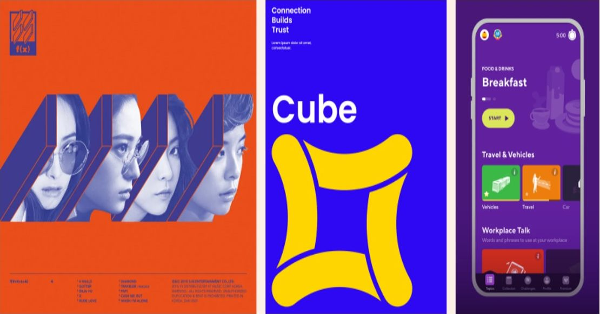
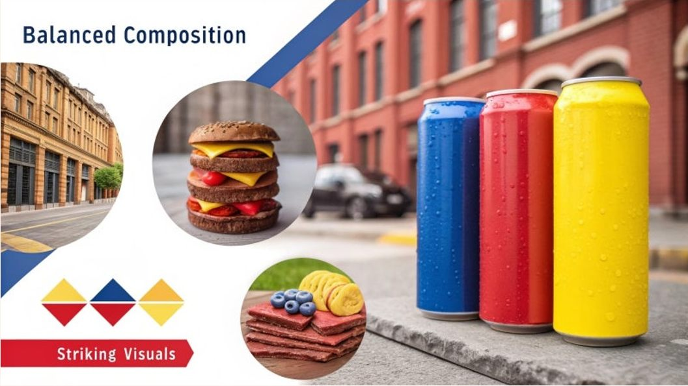

Munsell 색상환색마다 주는 느낌이 다릅니다

단색조화Monochromatic
가장 쉬운 조합으로 한 가지 색만 사용하고 밝기와 진하기만 다르게 사용하는 방법

유사색 조화Analogous
컬러휠에서 옆에 있는 색을 사용하는 방법

보색 조화Complementary
컬러휠에서 정반대 색을 사용하는 것.

삼색조화
컬러휠에서 삼각형모양으로 색을 고르는 방법 / 빨강, 노랑, 파랑
